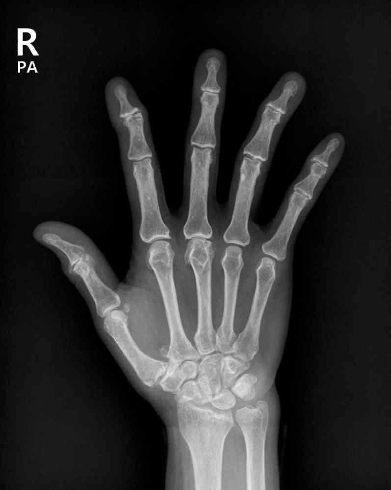
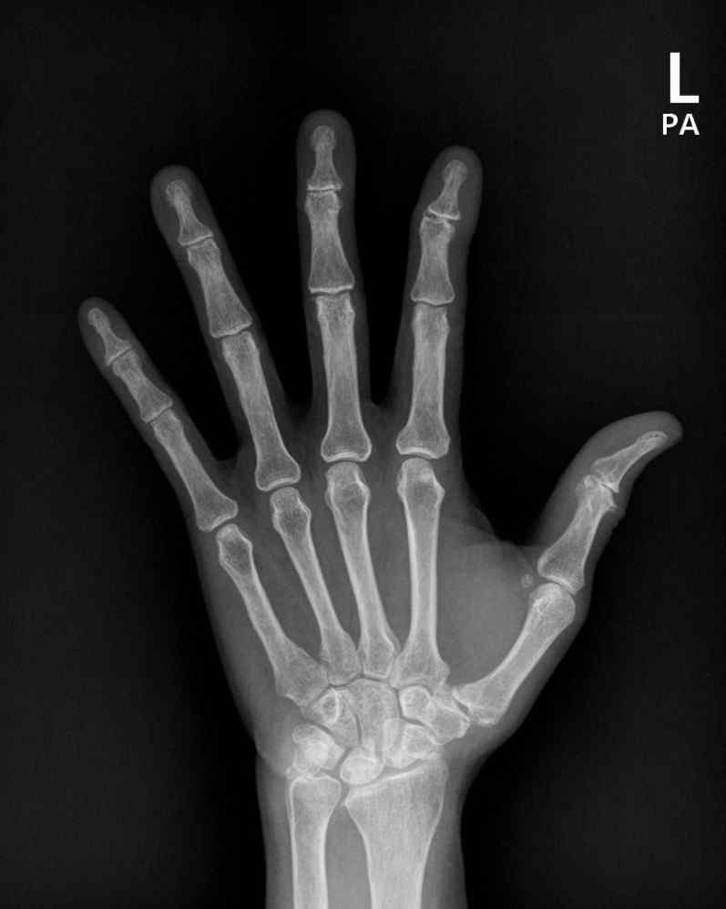
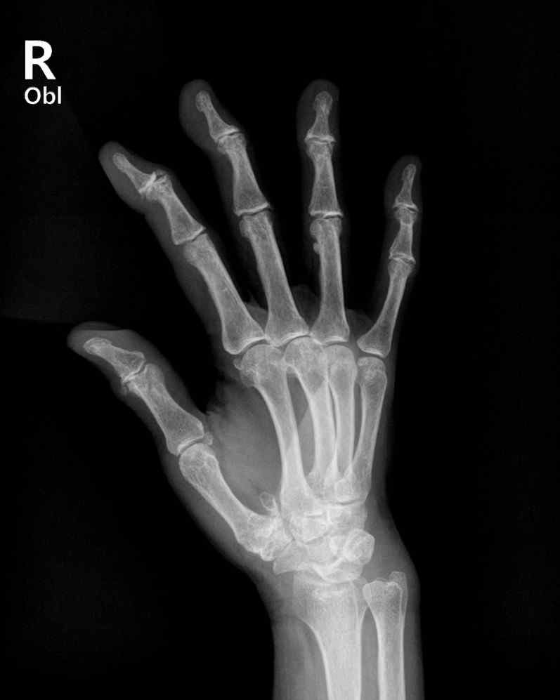
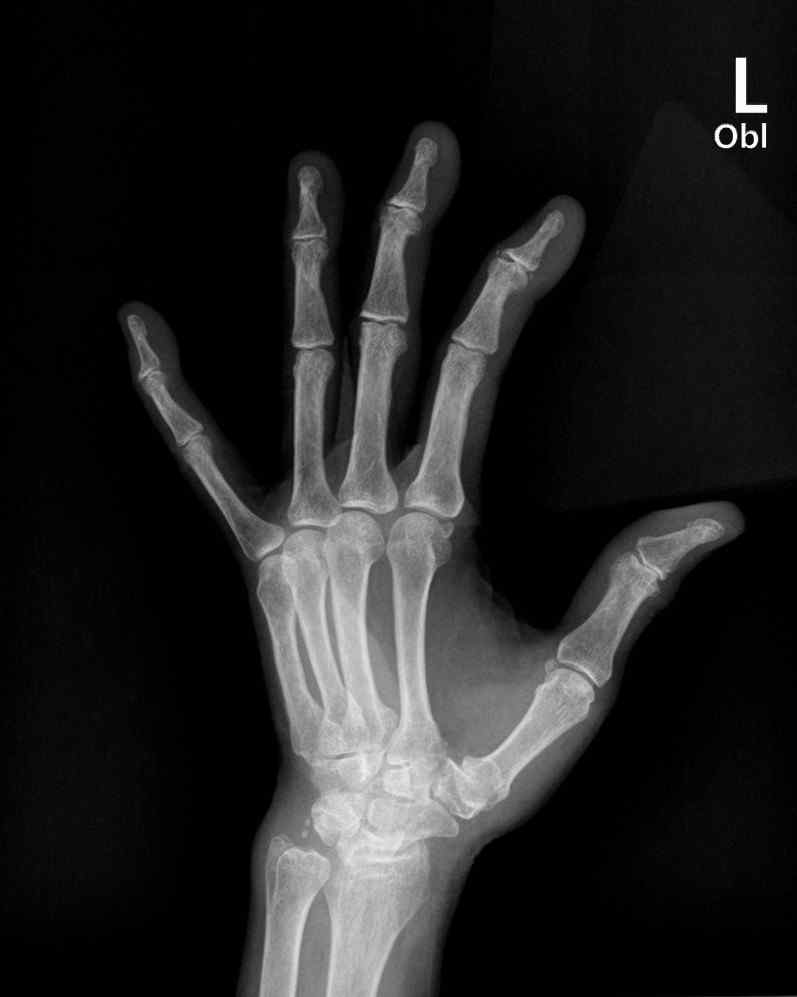

| Field | Details |
|---|---|
| Age / Sex | 72 y/o Female |
| Chief Complaint | Finger joint arthralgia · dry eye |
| Referral | RF 44.8 IU/mL → Rheumatology |
| Referred From | Ophthalmology (episcleritis w/u) |
| Onset | Insidious · 5–6 yrs |
| Course | Chronic · slowly progressive |
| Joint Pain — OLDCARTS | |
|---|---|
| Onset | Insidious, 5–6 yrs |
| Location | Bilateral DIP · thumb IP |
| Duration | Chronic, progressive |
| Character | Aching · bony deformity |
| Morning stiffness | 5–10 min (short) |
| Aggravating | Hand use · mornings |
| Severity | Mild |
| Systemic Sx | None — no fever / wt loss |
| Positive (+) | Pertinent Negatives (−) |
|---|---|
| Dry eye | Dry mouth |
| Red eye | Oral / genital ulcer |
| Myalgia | Raynaud phenomenon |
| — | Subcutaneous nodules |
| — | Malar / discoid rash · photosensitivity |
| — | Dactylitis · nail change · psoriasis |
| — | Edema · back pain · neuropathic pain |
| System | Findings |
|---|---|
| Musculoskeletal | Morning stiffness 5–10 min · bilateral DIP Heberden nodes (+) · bilateral 2nd DIP deformity |
| — ROM | Active ROM pain (+) · Passive ROM pain (−) |
| — Joint count | Swollen / Tender joints: 0 / 0 (SJ/TJ −/−) |
| HEENT / Neck | Non-specific |
| Chest / Abdomen | Non-specific |
| Back / Extremities | Edema (−) |
| Skin | Non-specific · no rash, no nodules |
| Lab | Result | Ref | |
|---|---|---|---|
| WBC | 4.63 | 3.8–11.0 | WNL |
| Hb | 12.8 | 11.2–15.0 | WNL |
| Platelet | 165 | 140–420 | WNL |
| Creatinine | 1.73 | 0.4–1.2 | ↑ |
| GFR | 82.3 | CKD-EPI | WNL |
| AST / ALT | 28 / 16 | 0–40 | WNL |
| ESR | 11 | 0–15 | WNL |
| CRP (hs) | 0.04 | 0–0.5 | WNL |
| Serology | Result | Ref |
|---|---|---|
| RF (quant.) | 44.8 ↑↑ | 0–14 |
| Anti-CCP Ab | Negative (1.2) | 0–5.0 |
| FANA | < 1:80 | ≤1:80 |
| Anti-SSA/Ro | Negative (0.7) | <7 |
| Anti-SSB/La | Negative (0.3) | <7 |
| MPO / PR-3 Ab | Neg / Neg | <5.0 |




| 1 | Chronic non-inflammatory hand arthralgia — DIP, thumb IP |
| 2 | Incidental RF elevation (44.8) |
| 3 | Chronic dry eye (3–4 yrs) |
| 4 | Knee OA (grade 2.5) |
| 5 | Dyslipidemia |
| Feature | Osteoarthritis (this patient) | Rheumatoid Arthritis |
|---|---|---|
| Joints | DIP · thumb IP · knee | MCP · PIP · wrist (symmetric) |
| Morning stiffness | 5–10 min (short) | > 1 hour |
| Swelling | Bony (Heberden nodes) | Soft-tissue synovitis |
| ESR / CRP | Normal (11 / 0.04) | Usually elevated |
| RF | 44.8 — nonspecific | Often positive |
| Anti-CCP | Negative | Often positive (specific) |
| X-ray | Osteophyte, JSN, no erosion | Marginal erosions |
| Clinical synovitis | Absent (SJ/TJ −/−) | Present (entry criterion) |
| RA | Less likely — no synovitis, anti-CCP (−) |
| Chronic dry eye | Sjögren not serologically supported |
| Knee OA | Consistent generalized OA phenotype |
| Pharmacotherapy | Notes |
|---|---|
| Topical NSAIDs | First-line for mild pain; PRN → daily if persistent |
| Oral NSAIDs | Moderate pain; monitor GI / CV / renal · add PPI or COX-2 if high GI risk |
| IA glucocorticoid | Acute flare with synovitis; limit repeat (cartilage loss) |
| Methotrexate | Some benefit reported — not standard therapy |
| Curcumin | Anti-inflammatory adjunct |
| Opioids | Not recommended — dependence, unclear long-term benefit |